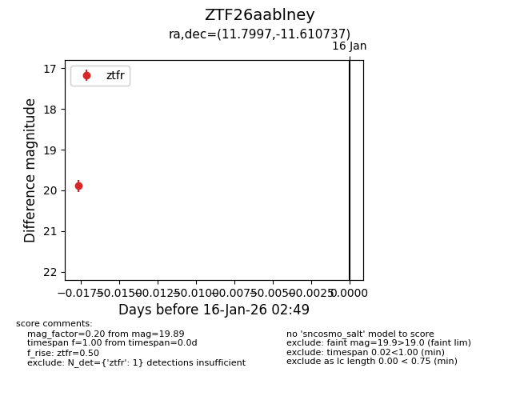
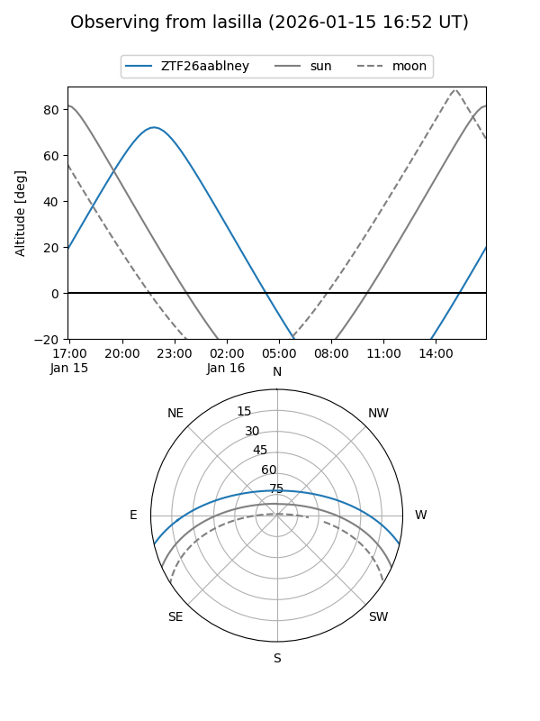
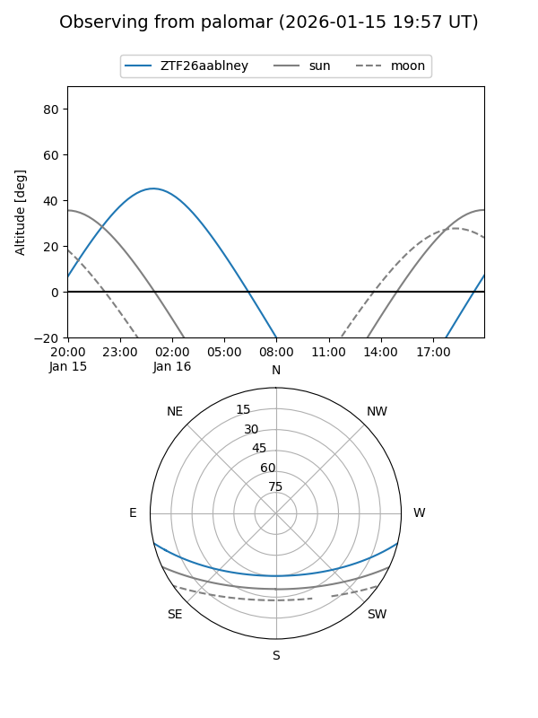

ZTF26aablney
Target ZTF26aablney at 2026-01-16 02:51
Aliases and brokers:
FINK: link
Lasair: link
ALeRCE: link
alt names
ZTF26aablney (ztf,fink_ztf)
Coordinates:
equatorial (ra, dec) = 11.7997,-11.61074
equatorial (HMS+DMS) = 00:47:11.93,-11:36:38.65
galactic (l, b) = (119.0568,-74.45058)
Flags:
Photometry:
last ztfr=19.89
1 ztfr detections
Lightcurve

Visibility


Additional plots